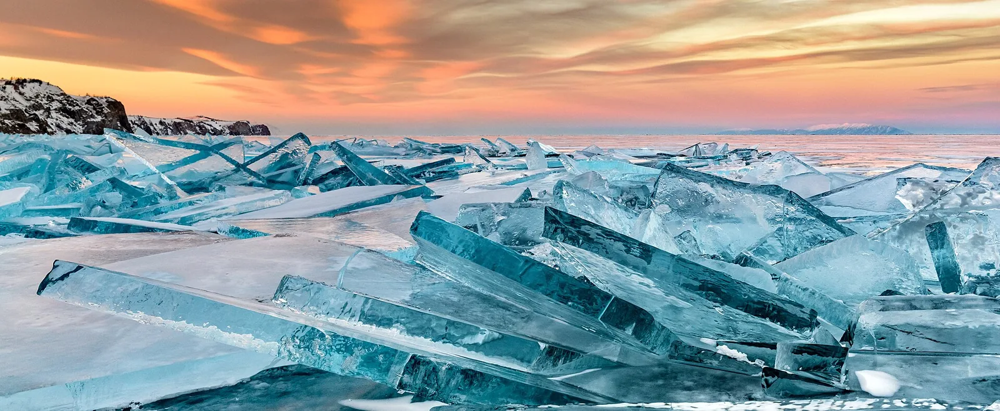
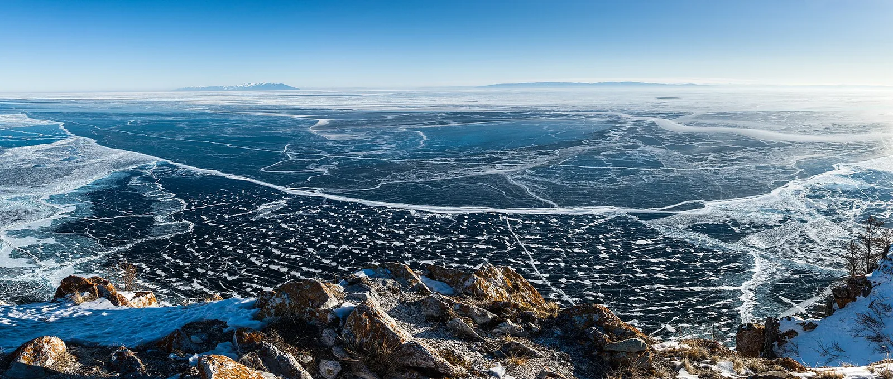

OV2 · Otros vuelos
OV2 · Andere Flüge
OV2 · Other flights
Lago Baikal
Información
El Baikal, en el sudeste de Siberia, es el lago más antiguo y más profundo del mundo: veinticinco millones de años y 1.700 metros de hondura, sobre 3,15 millones de hectáreas. Guarda cerca del 20 % de toda el agua dulce no congelada del planeta.
Lo llaman las Galápagos de Rusia. Su edad y su aislamiento produjeron una de las faunas de agua dulce más ricas y más extrañas que existen, de un valor excepcional para el estudio de la evolución.
Information
El Baikal, en el sudeste de Siberia, es el lago más antiguo y más profundo del mundo: veinticinco millones de años y 1.700 metros de hondura, sobre 3,15 millones de hectáreas. Guarda cerca del 20 % de toda el agua dulce no congelada del planeta.
Lo llaman las Galápagos de Rusia. Su edad y su aislamiento produjeron una de las faunas de agua dulce más ricas y más extrañas que existen, de un valor excepcional para el estudio de la evolución.
Information
El Baikal, en el sudeste de Siberia, es el lago más antiguo y más profundo del mundo: veinticinco millones de años y 1.700 metros de hondura, sobre 3,15 millones de hectáreas. Guarda cerca del 20 % de toda el agua dulce no congelada del planeta.
Lo llaman las Galápagos de Rusia. Su edad y su aislamiento produjeron una de las faunas de agua dulce más ricas y más extrañas que existen, de un valor excepcional para el estudio de la evolución.
La UICN evalúa el lago Baikal como de «preocupación significativa», por la contaminación que persiste y por amenazas nuevas: desarrollo turístico a gran escala, tratamiento deficiente de aguas cloacales que provoca eutrofización en la costa, y cambio climático.
También preocupan los proyectos hidroeléctricos en Mongolia y las prácticas actuales de regulación del nivel del agua, calificadas de peligrosas y dañinas. El cierre de la papelera de Baikalsk fue un paso positivo.
La UICN evalúa el lago Baikal como de «preocupación significativa», por la contaminación que persiste y por amenazas nuevas: desarrollo turístico a gran escala, tratamiento deficiente de aguas cloacales que provoca eutrofización en la costa, y cambio climático.
También preocupan los proyectos hidroeléctricos en Mongolia y las prácticas actuales de regulación del nivel del agua, calificadas de peligrosas y dañinas. El cierre de la papelera de Baikalsk fue un paso positivo.
La UICN evalúa el lago Baikal como de «preocupación significativa», por la contaminación que persiste y por amenazas nuevas: desarrollo turístico a gran escala, tratamiento deficiente de aguas cloacales que provoca eutrofización en la costa, y cambio climático.
También preocupan los proyectos hidroeléctricos en Mongolia y las prácticas actuales de regulación del nivel del agua, calificadas de peligrosas y dañinas. El cierre de la papelera de Baikalsk fue un paso positivo.
Fuentes
Quellen
Sources
- UICN, Perspectiva del Patrimonio Mundial (evaluación 2025), Lake Baikal — https://worldheritageoutlook.iucn.org/explore-sites/lake-baikal
Galería
Galerie
Gallery


Fuentes
Quellen
Sources
- UNESCO, Centro del Patrimonio Mundial, Lake Baikal — https://whc.unesco.org/en/list/754/ consultado 2026-10-06abgerufen 2026-10-06accessed 2026-10-06